사회조사분석사-2급 (2020-09-26 기출문제)
1과목: 조사방법론 I
1. 다음의 사례에서 활용한 연구방법은?
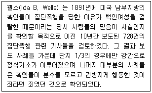
- 투사법
- 내용분석법
- 질적 연구법
- 사회성 측정법
(정답률: 81%)

2. 설문지 작성의 일반적인 과정으로 가장 적합한 것은?
- 필요한 정보의 결정 → 개별 항목의 내용결정 → 질문 형태의 결정 → 질문순서의 결정 → 설문지의 완성
- 필요한 정보의 결정 → 질문 형태의 결정 → 개별 항목의 내용결정 → 질문순서의 결정 → 설문지의 완성
- 개별항목의 내용결정 → 필요한 정보의 결정 → 질문 형태의 결정 → 질문순서의 결정 → 설문지의 완성
- 개별항목의 내용결정 → 질문형태의 결정 → 질문순서의 결정 → 필요한 정보의 결정 → 설문지의 완성
(정답률: 54%)
3. 자기기입식 설문조사에 비해 면접 설문조사가 갖는 장점이 아닌 것은?
- 답변의 맥락을 이해할 수 있다.
- 무응답 항목을 최소화한다.
- 조사대상 1인당 비용이 저렴하다.
- 개방형 질문에 유리하다.
(정답률: 78%)
4. 의사소통을 통한 자료수집방법에서 비체계적-비공개적 의사소통방법에 해당하는 것은?
- 우편조사
- 표적집단면접법
- 대인면접법
- 역할행동법
(정답률: 47%)
5. 다음 중 과학적 방법을 설명하고 있는 것은?
- 전문가에게 위임하는 방법과 어떤 어려운 결정에 있어 외적 힘을 요구하는 방법이다.
- 주장의 근거를 습성이나 관습에서 찾는 방법이다.
- 스스로 분명한 명제에 호소하는 방법이다.
- 의문을 제기하고, 가설을 설정하고 과학적으로 증명하는 방법이다.
(정답률: 84%)
6. 다음 중 탐색적 연구를 하기 위한 방법으로 가장 적합한 것은?
- 횡단연구
- 유사실험설계
- 시계열연구
- 사례연구
(정답률: 74%)
7. 다음에 해당하는 외생변수의 통제방법은?
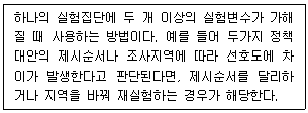
- 제거
- 상쇄
- 균형화
- 무작위화
(정답률: 62%)
8. 문헌고찰에 관한 설명으로 틀린 것은?
- 문헌고찰은 연구의 과정에서 매우 중요한 위치를 차지한다.
- 문헌고찰은 가능한 연구 초기에 해야 한다.
- 문헌고찰을 통해 해당 연구주제에 대한 과거 관련 연구들의 결과를 학습할 수 있다.
- 문헌고찰을 통해 기존 연구문제와 관련된 새로운 아이디어를 얻기는 어렵다.
(정답률: 78%)
9. 연구방법으로서의 연역적 접근법과 귀납적 접근법에 관한 설명으로 틀린 것은?
- 연역적 접근법을 취하려면 기존 이론에 대한 분석이 필요하다.
- 귀납적 접근법은 현실세계에 대한 관찰을 통해 경험적 일반화를 추구한다.
- 사회조사에서 연역적 접근법과 귀납적 접근법은 상호보완적으로 사용된다.
- 연역적 접근법은 탐색적 연구에, 귀납적 접근법은 가설검증에 주로 사용된다.
(정답률: 75%)
10. 질문지 문항배열에 대한 고려사항으로 적합하지 않은 것은?
- 시작하는 질문은 쉽게 응답할 수 있고 흥미를 유발할 수 있어야 한다.
- 앞의 질문이 다음 질문에 연상작용을 일으켜 응답에 영향을 미칠 수 있다면 질문들 사이의 간격을 멀리 떨어뜨린다.
- 응답자의 인적사항에 대한 질문은 가능한 한 나중에 한다.
- 질문이 담고 있는 내용의 범위가 좁은 것에서부터 점차 넓어지도록 배열한다.
(정답률: 78%)
11. 인간의 행위를 이해하는 데 필요한 개념 또는 변수의 종류를 지나치게 한정시키려는 경향은?
- 거시주의
- 미시주의
- 환원주의
- 조작주의
(정답률: 56%)
12. 다음 중 관찰자에게 필요한 사항으로 거리가 먼 것은?
- 관찰자는 인내심이 있어야 한다.
- 관찰자는 연구하는 집단에 참여해서는 안 된다.
- 주관성을 배제하고 객관성을 유지해야 한다.
- 관찰자는 집단에 동화되지 않아야 한다.
(정답률: 78%)
13. 다음 사례의 분석단위로 가장 적합한 것은?
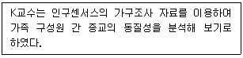
- 가구원
- 가구
- 종교
- 국가
(정답률: 58%)
14. 다음 중 연구주제의 선정요령으로 거리가 먼 것은?
- 연구자가 흥미를 느끼는 주제를 선정한다.
- 철저한 평가를 한 뒤에 선택 여부를 결정한다.
- 경험이 있거나 사전지식이 있는 주제를 선정한다.
- 새로운 학문적 기여를 위하여 가급적 연구를 뒷받침해줄 이론적 배경이 없는 주제를 선정한다.
(정답률: 84%)
15. 관찰의 세부 유형에 관한 설명으로 틀린 것은?
- 관찰이 일어나는 상황이 실제상황인지 연구자가 만들어 놓은 인위적인 상황인지를 기준으로 자연적 관찰과 인위적 관찰로 구분한다.
- 피관찰자가 자신의 행동이 관찰된다는 사실을 알고 있는지 모르고 있는지를 기준으로 공개적 관찰과 비공개적 관찰로 구분한다.
- 표준관찰기록양식의 사전 결정 등 체계화의 정도에 따라 체계적 관찰과 비체계적 관찰로 구분한다.
- 관찰에 사용하는 도구에 따라 직접관찰과 간접관찰로 구분한다.
(정답률: 76%)
16. 인간의 무의식 속에 내재되어 있는 동기, 가치, 태도 등을 알아내기 위하여 모호한 자극을 응답자에게 제시하여 반응을 알아보는 자료수집 방법은?
- 관찰법(observational method)
- 면접법(depth interview)
- 투사법(projective technique)
- 내용분석법(content analysis)
(정답률: 75%)
17. 질적 연구에 관한 설명과 가장 거리가 먼 것은?
- 조사자와 조사 대상자의 주관적인 인지나 해석 등을 모두 정당한 자료로 간주한다.
- 조사결과를 폭넓은 상황에 일반화하기에 유리하다.
- 연구절차가 양적 조사에 비해 유연하고 직관적이다.
- 일반적으로 상호작용의 과정에 보다 많은 관심을 둔다.
(정답률: 76%)
18. 가설의 구비요건 중 올바르게 서술된 것은?
- 검증이 용이하도록 표현되어야 한다.
- 동일 연구 분야의 다른 가설이나 이론과 무관해야 한다.
- 이론적 근거가 없더라도 탐색적 목적을 위해 가설을 구성할 수 있다.
- 내용과 방향이 모호하더라도 이는 검증절차를 통해 보완될 수 있다.
(정답률: 66%)
19. 설문조사에서 사전조사(pilot test)에 관한 설명으로 옳은 것은?
- 기초적인 자료가 확보되지 않은 상태에서 이루어지는 조사이다.
- 응답자들이 조사내용을 분명히 이해할 수 있는지의 여부를 확인하기 위해 실시되는 조사이다.
- 검증해야 할 가설을 찾아내기 위해 실시하는 조사이다.
- 사전조사에 참여한 응답자들이 실제 연구에 참여해도 된다.
(정답률: 64%)
20. 외생변수를 사전에 아는 경우, 외생변수가 실험대상이 되는 각 집단에 균등하게 영향을 미칠 수 있도록 실험집단과 통제집단을 선정하여 외생변수의 효과를 통제하는 방법은?
- 상쇄(counter balancing)
- 균형화(matching)
- 제거(elimination)
- 무작위화(randomization)
(정답률: 64%)
21. 심층면접시 중요하게 고려해야 할 사항으로 틀린 것은?
- 피면접자와 친밀한 관계(rapport)를 형성해야 한다.
- 비밀보장, 안전성 등 피면접자가 편안한 분위기를 느낄 수 있도록 해야 한다.
- 피면접자의 대답을 주의 깊게 경청하여야 하며 이전의 응답과 연결시켜 생각하는 습관을 가져야 한다.
- 피면접자가 대답을 하는 도중에 응답내용에 대한 평가적인 코멘트를 자주 해 주는 것이 좋다.
(정답률: 84%)
22. 다음 중 이론에 대한 함축적 의미가 아닌 것은?
- 과학적인 지식을 증진시키는 가장 효과적인 수단을 말한다.
- 명확하게 정의된 구성개념이 상호 관련된 상태에서 형성된 일련의 명제를 말한다.
- 구성개념을 실제로 나타내는 구체적인 변수들 간의 관계에 대한 체계적 견해를 제시한다.
- 개념들 간의 연관성에 대한 현상을 설명한다.
(정답률: 40%)
23. 서베이 조사의 일반적인 특성에 관한 설명으로 틀린 것은?
- 모집단으로부터 추출된 표본을 대상으로 조사하는 방법이다.
- 센서스(census)는 대표적인 서베이 방법 중 하나이다.
- 인과관계 분석보다는 예측과 기술을 주목적으로 한다.
- 대인조사, 전화조사, 우편조사, 온라인 조사 등이 있다.
(정답률: 42%)
24. 초점집단(focus group)조사와 델파이조사에 관한 설명으로 옳은 것은?
- 초점집단조사에서는 익명 집단의 상호작용을 통해 도출된 자료를 분석한다.
- 초점집단조사는 내용타당도를 높이는 목적으로 사용될 수 있다.
- 델파이조사는 비구조화 방식으로 정보의 흐름을 제어한다.
- 델파이조사는 대면(face to face) 집단의 상호작용을 통해 도출된 자료를 분석한다.
(정답률: 52%)
25. 전화조사의 장점과 가장 거리가 먼 것은?
- 비용을 줄일 수 있다.
- 높은 응답률을 보장할 수 있다.
- 응답자 추출, 질문, 응답 등이 자동 처리될 수 있다.
- 복잡한 문제들에 대한 의견을 파악하기 용이하다.
(정답률: 61%)
26. 다음은 조사연구과정의 일부이다. 이를 순서대로 나열한 것은?
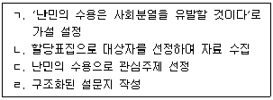
- ㄱ → ㄴ → ㄷ → ㄹ
- ㄱ → ㄷ → ㄹ → ㄴ
- ㄷ → ㄱ → ㄹ → ㄴ
- ㄷ → ㄹ → ㄱ → ㄴ
(정답률: 77%)
27. 광범위한 개인의 감정이나 생활경험을 알아보고자 할 경우 많이 활용하는 조사방법은?
- 집중면접(focused interview)
- 임상면접(clinical interview)
- 비지시적 면접(nondirective interview)
- 구조식 면접(structured interview)
(정답률: 31%)
28. 다음 중 2차 자료가 아닌 것은?
- 각종 통계자료
- 연구자가 직접 응답자에게 질문해서 얻은 자료
- 조사기관의 정기, 비정기 간행물
- 기업에서 수집한 자료
(정답률: 82%)
29. 실험설계를 사전실험설계, 순수실험설계, 유사실험설계, 사후실험설계로 구분할 때 유사실험설계에 해당하는 것은?
- 단일집단 사후측정설계
- 집단비교설계
- 솔로몬 4집단설계
- 비동질 통제집단설계
(정답률: 54%)
30. 다음에서 설명하고 있는 연구방법은?
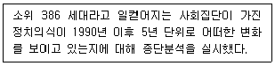
- 추세연구
- 패널연구
- 현장연구
- 코호트연구
(정답률: 55%)
2과목: 조사방법론 II
31. 오후 2시부터 4시 사이 서울 강남역을 지나는 행인들 중 접근이 쉬운 사람을 대상으로 신제품에 대한 의견을 물어보는 경우 이에 해당하는 표집방법은?
- 판단표집
- 편의표집
- 층화표집
- 군집표집
(정답률: 77%)
32. 변수의 종류에 관한 설명으로 옳은 것을 모두 고른 것은?
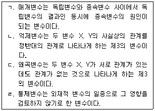
- ㄱ, ㄴ
- ㄴ, ㄷ
- ㄷ, ㄹ
- ㄱ, ㄹ
(정답률: 62%)
33. 신뢰도에 관한 기술 중 옳은 것은?
- 오차분산이 작으면 작을수록 그 측정의 신뢰도는 낮아진다.
- 신뢰도 계수는 –1과 1사이를 움직인다.
- 신뢰도에 관한 오차는 체계적 오차를 말한다.
- 신뢰도 계수는 실제값의 분산에 대한 참값의 분산의 비율로 나타낸다.
(정답률: 44%)
34. 다음 중 표집틀(sampling frame)을 평가하는 주요 요소와 가장 거리가 먼 것은?
- 포괄성
- 추출확률
- 효율성
- 안정성
(정답률: 45%)
35. 척도구성방법을 비교척도구성(comparative scaling)과 비비교척도구성(non-comparative scaling)으로 구분할 때 비비교척도구성에 해당하는 것은?
- 쌍대비교법(paired comparison)
- 순위법(rank-order)
- 연속평정법(continuos rating)
- 고정총합법(constant sum)
(정답률: 53%)
36. 종교와 계급이라는 2개의 변수와 각 변수에는 4개의 범주를 두고(4종류의 종교 및 4종류의 계급) 표를 만들 때 칸들이 만들어진다. 각 칸마다 10가지 사례가 있다면 표본의 크기는?
- 8
- 16
- 80
- 160
(정답률: 58%)
37. 다음 중 비비례층화표집(disproportionate stratified sampling)이 가장 적합한 경우는?
- 미국시민권자의 민족적(ethnic) 특성을 비교하고 싶을 때
- 유권자 지지율 조사시 모집단의 주거형태별 구성비율을 정확히 반영하고 싶을 때
- 연구자의 편의에 따라 표본을 추출하고 싶을 때
- 대규모 조사에서 최종표집단위와는 다른 군집별로 1차 표집하고 싶을 때
(정답률: 35%)
38. 타당도에 관한 설명으로 틀린 것은?
- 측정도구가 측정하고자 하는 현상을 일관성 있게 측정하였는가를 말해준다.
- 측정도구가 실제로 측정하고자 하는 개념을 측정하였는가를 말해준다.
- 타당도는 그 개념이 정확히 측정되었는가를 말해준다.
- 문항구성이 측정하고자 하는 개념을 얼마나 잘 반영하고 있는가를 말해준다.
(정답률: 70%)
39. 표집오차에 대한 설명으로 옳지 않은 것은?
- 표집오차는 통계량과 모집단의 모수 간 오차이다.
- 표집오차는 표본추출과정에서 발생하는 오차이다.
- 표본의 크기가 크면 표집오차는 감소한다.
- 비확률표집오차를 줄이면 표집오차도 줄어든다.
(정답률: 63%)
40. 한국인이 중국인을 어느 정도 받아들이는지에 대한 조사 결과, 100명 중 30명은 ㉤번을, 70명은 ㉦번을 각각 응답하였다. 이때의 인종 간 거리계수는?
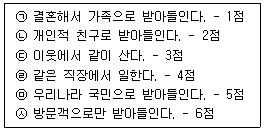
- 1.5
- 4.2
- 5.5
- 5.7
(정답률: 61%)
41. 청소년의 비행에 관하여 연구할 때 조작적 정의(operational definition) 단계에 해당하는 것은?
- 사전(dictionary)을 참고하여 비행을 명확히 정의한다.
- 청소년의 비행에 대한 기존 연구 결과를 정리한다.
- 비행 관련 척도를 탐색한 후 선정한다.
- 비행청소년의 현황을 파악한다.
(정답률: 58%)
42. 조작적 정의에 관한 설명으로 틀린 것은?
- 추상적인 개념을 구체적인 경험세계와 연결시키는 과정이다.
- 특정 개념은 반드시 한 가지의 조작적 정의만을 갖는다.
- 조사목적과 관련하여 실용주의적인 측면을 포함한다.
- 실행가능성, 관찰가능성이 중요하다.
(정답률: 75%)
43. 다음 표집방법 중 비확률표집방법이 아닌 것은?
- 판단표집(judgemental sampling)
- 편의표집(convenience sampling)
- 집락표집(cluster sampling)
- 할당표집(quota sampling)
(정답률: 71%)
44. 전수조사 대신 표본조사를 하는 이유와 가장 거리가 먼 것은?
- 경비를 절감하기 위해
- 전수조사에 비해 조사과정을 보다 잘 통제할 수 있어서
- 표본오류를 줄이기 위해
- 광범위한 주제에 걸쳐서 연구하기 위해
(정답률: 67%)
45. 층화표집과 군집표집에 관한 설명으로 옳은 것은?
- 층화표집은 모든 부분집단에서 표본을 선정한다.
- 군집표집은 모집단을 하나의 집단으로만 분류한다.
- 군집표집은 부분집단 내에 동질적인 요소로 이루어진다고 전제한다.
- 층화표집은 부분집단 간에 동질적인 요소로 이루어진다고 전제한다.
(정답률: 56%)
46. 조작화와 관련하여 다음은 무엇에 대한 예에 해당하는가?
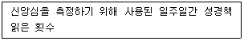
- 개념적 정의
- 지표
- 개념
- 지수
(정답률: 54%)
47. 측정의 무작위 오류(random error)에 관한 설명으로 옳은 것은?
- 응답자가 자신에 대한 이미지를 좋게 만들기 위해 응답할 때 발생한다.
- 타당도를 낮추는 주요 원인이다.
- 설문문항이 지나치게 많을 경우 발생하기 쉽다.
- 연구자가 응답자에게 유도성 질문을 할 때 발생한다.
(정답률: 45%)
48. 군집표집(cluster sampling)의 특성으로 옳지 않은 것은?
- 대규모 조사에서 경제적으로 효율적이다.
- 일반적으로 다단계를 통하여 표집이 이루어진다.
- 층화표집에 비하여 일반적으로 통계적 효율성이 높다.
- 목표모집단의 구성요소들을 총망라한 목록을 수집하기가 현실적으로 어려울 경우에 사용될 수 있다.
(정답률: 46%)
49. 측정의 신뢰도와 타당도에 관한 설명으로 옳지 않은 것은?
- 반분법은 신뢰도 측정방법이다.
- 내적 타당도는 측정의 정확성이다.
- 신뢰도가 높지만 타당도는 낮을 수 있다.
- 측정오류는 신뢰도 및 타당도와 관련이 있다.
(정답률: 43%)
50. 다음에서 설명하고 있는 타당도의 원리는?
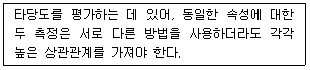
- 수렴원리
- 차별원리
- 독단주의
- 요인분석
(정답률: 68%)
51. 사람, 사건, 상태, 또는 대상에게 미리 정해놓은 일정한 규칙에 따라서 숫자를 부여하는 것은 무엇인가?
- 측정
- 척도
- 개념
- 가설
(정답률: 50%)
52. 측정의 신뢰도를 높이기 위한 방법으로 거리가 먼 것은?
- 측정항목의 내용을 명확하게 한다.
- 측정항목의 수를 늘린다.
- 가능한 범위에서 측정의 시점을 최대한 길게 정하여 측정한다.
- 응답자를 배려한 환경, 분위기를 조성한다.
(정답률: 69%)
53. 서스톤 척도(Thurstone scale)에 대한 설명으로 틀린 것은?
- 리커트 척도법나 거트만 척도법에 비해 서스톤 척도법은 상당한 비용과 시간이 걸린다는 단점을 가지고 있다.
- 리커트 척도법나 거트만 척도법의 경우는 구간 수준(interval level)의 측정이 가능하지만, 서스톤 척도법은 서열 수준(ordinal level)의 측정만이 가능하다.
- 평가자의 편견이 개입될 가능성이 있으며, 이 문제를 완화하기 위해서는 가능하면 많은 수의 평가자를 선정하는 것이 좋다.
- 문항의 선정 과정에서 평가자 간에 이견이 큰 문항은 제외한다.
(정답률: 58%)
54. 다음 중 표본의 크기를 결정하는 요인과 가장 거리가 먼 것은?
- 조사목적
- 조사비용
- 분석기법
- 집단별 통계치의 필요성
(정답률: 26%)
55. A대학 경상학부의 학생들을 대상으로 학과 만족도를 조사하려고 한다. 남학생이 800명, 여학생 200명일 때 층화를 성별에 따라 남자 80%, 여자 20%가 되게 표집하는 방법은?
- 비례층화표집
- 단순무작위표집
- 할당표집
- 집락표집
(정답률: 64%)
56. 등간척도를 이용한 측정방법을 모두 고른 것은?
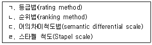
- ㄱ, ㄴ
- ㄴ, ㄹ
- ㄱ, ㄷ, ㄹ
- ㄴ, ㄷ, ㄹ
(정답률: 58%)
57. 신뢰도와 타당도에 영향을 미치는 요인과 가장 거리가 먼 것은?
- 조사도구
- 조사환경
- 조사목적
- 조사대상자
(정답률: 66%)
58. 척도를 구성하는 과정에서 질문문항들이 단일차원을 이루는지를 검증할 수 있는 척도는?
- 의미분화 척도(semantic differntail scale)
- 서스톤 척도(thurstone sclae)
- 리커트 척도(likert scale)
- 거트만 척도(guttman scale)
(정답률: 37%)
59. 측정수준의 특성상 지역별로 측정된 실업률의 사칙연산 가능범위는?
- 사칙연산이 불가능
- 덧셈과 뺄셈만 가능
- 곱셈과 나눗셈만 가능
- 사칙연산이 모두 가능
(정답률: 68%)
60. 측정도구의 타당도 평가방법에 대한 설명으로 틀린 것은?
- 한 측정치를 기준으로 다른 측정치와의 상관관계를 추정한다.
- 크론바하 알파값을 산출하여 문항 상호간의 일관성을 측정한다.
- 내용타당도는 점수 또는 척도가 일반화하려고 하는 개념을 어느 정도 잘 반영해 주는가를 의미한다.
- 개념타당도는 측정하고자 하는 개념이 실제로 적절하게 측정되었는가를 의미한다.
(정답률: 48%)
3과목: 사회통계
61. 표본으로 추출된 6명의 학생이 지원했던 여름방학 아르바이트의 수가 다음과 같이 정리되었다.
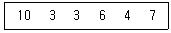
피어슨의 비대칭계수(p)에 근거한 자료의 분포에 관한 설명으로 옳은 것은?(오류 신고가 접수된 문제입니다. 반드시 정답과 해설을 확인하시기 바랍니다.)
- 비대칭계수의 값이 0에 근사하여 좌우 대칭형 분포를 나타낸다.
- 비대칭계수의 값이 양의 값을 나타내어 왼쪽으로 꼬리를 늘어뜨린 비대칭 분포를 나타낸다.
- 비대칭계수의 값이 음의 값을 나타내어 왼쪽으로 꼬리를 늘어뜨린 비대칭 분포를 나타낸다.
- 비대칭계수의 값이 양의 값을 나타내어 오른쪽으로 꼬리를 늘어뜨린 비대칭 분포를 나타낸다.
(정답률: 49%)
62. 다음 중 분산분석(ANOVA)에 관한 설명으로 틀린 것은?
- 분산분석은 분산값들을 이용해서 두 개 이상의 집단 간 평균 차이를 검정할 때 사용된다.
- 각 집단에 해당되는 모집단의 분포가 정규분포이며 서로 동일한 분산을 가져야 한다.
- 관측값에 영향을 주는 요인은 등간척도나 비율척도이다.
- 분산분석의 가설검정에는 F-분포 통계량을 이용한다.
(정답률: 30%)
63. 추정된 회귀선이 주어진 자료에 얼마나 잘 적합되는지 알아보는데 사용하는 결정계수를 나타낸 식이 아닌 것은? (단, Yi는 주어진 자료의 값이고,
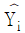
은 추정값이며,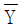
는 자료의 평균이다.)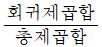
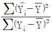
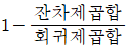
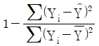
(정답률: 41%)
64. 설명변수(X)와 반응변수(Y) 사이에 단순회귀모형을 가정할 때, 결정계수는?
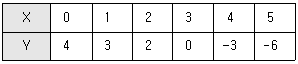
- 0.2⑤
- 0.555
- 0.745
- 0.946
(정답률: 18%)
65. 평균이 100, 표준편차가 10인 정규분포에서 110 이상일 확률은 어느 것과 같은가? (단, Z는 표준정규분포를 따르는 확률변수이다.)
- P(Z≤-1)
- P(Z≤1)
- P(Z≤-10)
- P(Z≤10)
(정답률: 35%)
66. 표본의 크기가 커짐에 따라 확률적으로 모수에 수렴하는 추정량은?
- 불편추정량
- 유효추정량
- 일치추정량
- 충분추정량
(정답률: 40%)
67. 다음은 중회귀식
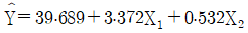
의 회귀계수표이다. 빈칸에 알맞은 값은?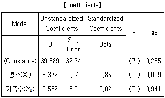
- 가 = 1.21, 나 = 3.59, 다 = 0.08
- 가 = 2.65, 나 = 0.09, 다 = 9.41
- 가 = 10.21, 나 = 36, 다 = 0.8
- 가 = 39.69, 나 = 3.96, 다 = 26.5
(정답률: 33%)
68. 3×4 분할표 자료에 대한 독립성 검정을 위한 카이제곱 통계량의 자유도는?
- 12
- 10
- 8
- 6
(정답률: 55%)
69. 산포도에 관한 설명으로 틀린 것은?
- 관측값들이 평균으로부터 멀리 떨어져 나타날수록 분산은 커진다.
- 범위는 변수값으로 측정된 관측값들 중에서 가장 큰 값과 가장 작은 값의 절대적인 차이를 말한다.
- 분산은 평균편차의 절댓값들의 평균이다.
- 표준편차는 분산의 제곱근이다.
(정답률: 54%)
70. k개 처리에서 n회씩 실험을 반복하는 일원배치 모형 xij = μ + ai + εij에 관한 설명으로 틀린 것은? (단, i = 1, 2, …, k 이고, j = 1, 2, …, n 이며 εij ~ N(0, σ2))
- 오차항 εij들의 분산은 같다.
- 총 실험횟수는 k×n 이다.
- 총 평균 μ와 i번째 처리효과 ai는 서로 독립이다.
- xij는 i번째 처리의 j번째 관측값이다.
(정답률: 35%)
71. 어떤 동전이 공정한가를 검정하고자 20회를 던져본 결과 앞면이 15번 나왔다. 이 검정에서 사용되는 카이제곱 통계량
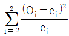
의 값은?- 2.5
- 5
- 10
- 12.5
(정답률: 21%)
72. 어느 도시에 살고 있는 주민 중에서 지난 1년간 해외여행을 경험한 비율을 조사하려고 한다. 이 비율에 대한 추정량의 오차가 0.02 미만일 확률이 최소한 95%가 되기를 원할 때 필요한 최소 표본의 크기 n을 구하는 식은? (단, Z가 표준정규분포를 따르는 확률변수일 때, P(Z＞1.96) = 0.025 이다.)
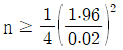
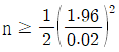
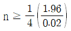
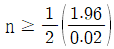
(정답률: 42%)
73. 다음 중 가설검정에 관한 설명으로 옳은 것은?
- 제2종의 오류를 유의수준이라고 한다.
- 유의수준이 커질수록 기각역은 넓어진다.
- 제1종 오류의 확률을 크게 하면 제2종 오류의 확률도 커진다.
- p값은 귀무가설 또는 대립가설을 입증하는 정도와 상관없는 개념이다.
(정답률: 50%)
74. 다음은 특정한 4개의 처리수준에서 각각 6번의 반복을 통해 측정된 반응값을 이용하여 계산한 값들이다. 이를 이용하여 계산된 평균오차제곱합(MSE)은?
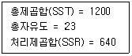
- 28.0
- 5.29
- 31.1
- 213.3
(정답률: 36%)
75. 자료의 분포에 대한 대푯값으로 평균(mean) 대신 중앙값(median)을 사용하는 이유로 가장 적합한 것은?
- 자료의 크기가 큰 경우 평균은 계산이 어렵다.
- 편차의 총합은 항상 0이다.
- 평균은 음수가 나올 수 있다.
- 평균은 중앙값보다 극단적인 관측값에 의해 영향을 받는 정도가 심하다.
(정답률: 65%)
76. 어느 지역 고등학교 학생 중 안경을 착용한 학생들의 비율을 추정하기 위해 이 지역 고등학교 성별 구성비에 따라 남학생 600명, 여학생 400명을 각각 무작위로 추출하여 조사하였더니 남학생 중 240명, 여학생 중 60명이 안경을 착용한다는 조사결과를 얻었다. 이 지역 전체 고등학생 중 안경을 착용한 학생들의 비율에 대한 가장 적절한 추정값은?
- 0.4
- 0.3
- 0.275
- 0.15
(정답률: 55%)
77. 다음 단순회귀모형에 대한 설명으로 틀린 것은?
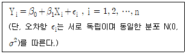
- 각 Yi의 기댓값은 β0 + β1Xi로 주어진다.
- 오차항 εi와 Yi는 동일한 분산을 갖는다.
- β0는 Xi가
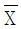
일 경우 Y의 반응량을 나타낸다. - 모든 Yi들은 상호 독립적으로 측정된다.
(정답률: 39%)
78. 확률변수 X는 표준정규분포를 따른다. 이때, 2X의 확률분포는?
- N(0, 1)
- N(0, 2)
- N(0, 4)
- N(0, 16)
(정답률: 51%)
79. 어느 공정에서 생산되는 제품의 약 40%가 불량품이라고 한다. 이 공정의 제품 4개를 임의로 추출했을 때, 4개가 불량품일 확률은?
- 16/125
- 64/625
- 62/625
- 16/625
(정답률: 50%)
80. 5명의 흡연자를 무작위로 선정하여 체중을 측정하고, 금연을 시킨 뒤 4주 후에 다시 체중을 측정하였다. 금연 전후의 체중에 변화가 있는가에 대해 t-검정하고자 할 때, 검정통계량의 값은?
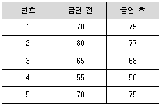
- -0.21
- -0.32
- -0.48
- -1.77
(정답률: 21%)
81. 지각 건수가 요일별로 동일한 비율인지 알아보기 위해 카이제곱(χ2)검정을 실시할 경우, 이 자료에서 χ2값은?
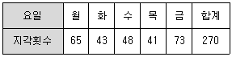
- 14.96
- 16.96
- 18.96
- 20.96
(정답률: 25%)
82. 단순회귀모형에 대한 추정회귀직선이
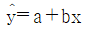
일 때, b의 값은?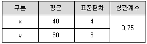
- 0.07
- 0.56
- 1.00
- 1.53
(정답률: 35%)
83. 측도의 단위가 관측지의 단위와 다른 것은?
- 평균
- 중앙값
- 표준편차
- 분산
(정답률: 37%)
84. 우리나라 대학생들의 1주일 동안 독서시간은 평균이 20시간, 표준편차가 3시간인 정규분포를 따른다고 알려져 있다. 이를 확인하기 위해 36명의 학생을 조사하였더니 평균이 19시간으로 나타났다. 위 결과를 이용하여 우리나라 대학생들의 평균 독서시간이 20시간보다 작다고 말할 수 있는지를 검정한다고 할 때 다음 설명 중 옳은 것은? (단,
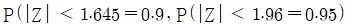
)- 검정통계량의 값은 -2이다.
- 가설검정에는 χ2분포가 이용된다.
- 유의수준 0.⑤에서 검정할 때, 우리나라 대학생들의 평균 독서시간이 20시간보다 작다고 말할 수 없다.
- 표본분산이 알려져 있지 않아 가설검정을 수행할 수 없다.
(정답률: 31%)
85. 정규분포에 관한 설명으로 틀린 것은?
- 정규분포곡선은 자유도에 따라 모양이 달라진다.
- 정규분포는 평균을 기준으로 대칭인 종 모양의 분포를 이룬다.
- 평균, 중위수, 최빈수가 동일하다.
- 정규분포에서 분산이 클수록 정규분포곡선은 양 옆으로 퍼지는 모습을 한다.
(정답률: 49%)
86. 평균이 8이고 분산이 0.6인 정규모집단으로부터 10개의 표본을 임의로 추출하는 경우, 표본평균의 평균과 분산은?
- (0.8, 0.6)
- (0.8, 0.06)
- (8, 0.06)
- (8, 0.19)
(정답률: 46%)
87. 귀무가설이 참임에도 불구하고 이를 기각하는 결정을 내리는 오류를 무엇이라고 하는 가?
- 제1종 오류
- 제2종 오류
- 제3종 오류
- 제4종 오류
(정답률: 59%)
88. 정규분포를 따르는 어떤 집단의 모평균이 10인지를 검정하기 위하여 크기가 25인 표본을 추출하여 관측한 결과 표본평균은 9, 표본표준편차는 2.5이었다. t-검정을 할 경우 검정통계량의 값은?
- 2
- 1
- -1
- -2
(정답률: 29%)
89. 다음은 PC에 대한 월간 유지비용(원)을 종속변수로 하고 주간 사용기간(시간)을 독립변수로 하여 회귀분석을 한 결과이다.
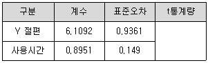
월간 유지비용이 사용시간과 관련이 있는지 여부를 검정하기 위한 t통계량의 값은?
- 4.513
- 5.513
- 6.007
- 6.526
(정답률: 33%)
90. 다음 자료는 새로 개발한 학습방법에 의해 일정기간 교육을 실시하기 전·후에 시험을 통해 얻은 자료이다. 학습효과가 있는지에 대한 가설검정에 관한 설명으로 틀린 것은? (단,
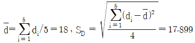
이다.)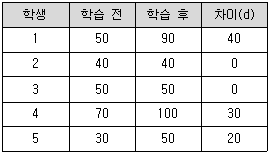
- 가설의 형태는 H0 : μd = 0 vs H1 : μd ＞ 0 이다. 단, μd는 학습 전후 차이의 평균이다.
- 가설검정에는 자유도가 4인 t분포가 이용된다.
- 검정통계량 값은 2.25이다.
- 조사한 학생의 수가 늘어날수록 귀무가설을 채택할 가능성이 많아진다.
(정답률: 39%)
91. 다음 분산분석표에서 빈칸에 들어갈 F-값은?
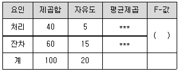
- 1.5
- 2.0
- 2.5
- 3.0
(정답률: 55%)
92. 취업을 위한 특별교육프로그램을 시행한 결과 통계가 다음과 같이 집계되었다. 특별교육을 이수한 어떤 사람이 취업할 확률은?
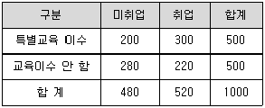
- 48%
- 50%
- 52%
- 60%
(정답률: 56%)
93. 어느 부서의 사원들 중 대졸 직원은 60명이고, 고졸 직원은 40명이다. 대졸 직원들의 월 평균 급여는 150만원이고 고졸 직원들의 월 평균 급여는 120만원이다. 이 부서 전체 사원 100명의 월 평균 급여는?
- 138만원
- 135만원
- 132만원
- 130만원
(정답률: 58%)
94. 두 확률변수 X와 Y 상관계수는 0.92 이다.
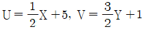
이라 할 때, 두 확률변수 U와 V의 상관계수는?- 0.69
- -0.69
- 0.92
- -0.92
(정답률: 41%)
95. 자동차 보험의 가입자가 보험금 지급을 청구할 확률은 0.2라 한다. 200명의 가입자 중 보험금 지급을 청구하는 사람의 수를 X라 할 때, X의 평균과 분산은?
- 평균 : 40, 분산 : 16
- 평균 : 40, 분산 : 32
- 평균 : 16, 분산 : 40
- 평균 : 16, 분산 : 32
(정답률: 57%)
96. 어느 공장에서 생산되는 나사못의 10%가 불량품이라고 한다. 이 공장에서 만든 나사못 중 400개를 임의로 뽑았을 때 불량품 개수 X의 평균과 표준편차는?
- 평균 : 30, 표준편차 : 6
- 평균 : 40, 표준편차 : 36
- 평균 : 30, 표준편차 : 36
- 평균 : 40, 표준편차 : 6
(정답률: 42%)
97. 자가용 승용차 운전자를 대상으로 지난 한 해 동안 본인이 일으킨 사고에 대해 보험처리를 한 운전자의 비율을 조사하고자 한다. 보험처리를 한 운전자 비율의 추정치가 0.03 이내라고 95%의 확신을 가지려면 최소한 몇 개의 표본을 취해야 하는가? (단, Z0.0.25 = 1.96)
- 968명
- 1068명
- 1168명
- 1268명
(정답률: 39%)
98. 다음 중 상관계수(rxy)에 대한 설명으로 틀린 것은?
- 상관계수 rxy는 두 변수 X와 Y의 선형관계의 정도를 나타낸다.
- 상관계수의 범위는 (-1, 1)이다.
- rxy = ±1 이면 두 변수는 완전한 상관관계에 있다.
- 상관계수 rxy는 두 변수의 이차곡선관계를 나타내기도 한다.
(정답률: 42%)
99. 카이제곱분포에 대한 설명으로 틀린 것은?
- 자유도가 k인 카이제곱분포의 평균은 k이고, 분산은 2k이다.
- 카이제곱분포의 확률밀도함수는 오른쪽으로 치우쳐져 있고, 왼쪽으로 긴 꼬리를 갖는다.
- V1, V2가 서로 독립이며 각각 자유도가 k1, k2인 카이제곱분포를 따를 때 V1+V2는 자유도가 k1+k2인 카이제곱분포를 따른다.
- Z1, …, Zk가 서로 독립이며 각각 표준정규분포를 따르는 확률변수일 때 Z12 + … + Zk2 은 자유도가 k인 카이제곱분포를 따른다.
(정답률: 32%)
100. 대규모의 동일한 모집단에서 무작위로 100명과 1000명으로 된 표본을 각각 추출하였을 때, 모집단의 평균을 더 정확히 추정할 수 있는 표본은 어느 것이며 그 이유는 무엇인가?
- n = 100인 경우이며, 표준오차가 n = 1000인 경우보다 작기 때문이다.
- n = 100인 경우이며, 표준오차가 n = 1000인 경우보다 크기 때문이다.
- n = 1000인 경우이며, 표준오차가 n = 100인 경우보다 작기 때문이다.
- n = 1000인 경우이며, 표준오차가 n = 100인 경우보다 크기 때문이다.
(정답률: 61%)